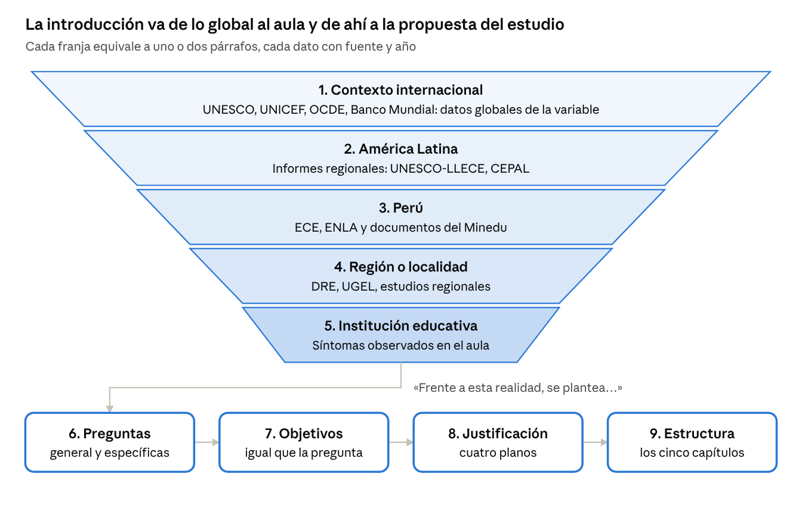

Parte II · Guía de redacción sección por sección
8. Introducción
La introducción funciona como un embudo: parte del problema en el mundo y se estrecha hasta el aula estudiada, para luego formular preguntas, objetivos y justificación. Su extensión orientativa es de 4 a 6 páginas.
Como la plantilla no tiene un capítulo de planteamiento del problema, la realidad problemática, las preguntas, los objetivos, las hipótesis y la justificación van en la introducción.

Las cinco franjas describen el problema y se estrechan hasta el aula; las cuatro cajas inferiores lo convierten en la propuesta del estudio. Elaboración propia.
| N.º | Movimiento | Párrafos | Fórmula de arranque |
|---|---|---|---|
| 1 | Contexto internacional | 1–2 | A nivel internacional, [ORGANISMO] ([AÑO]) reporta que [DATO SOBRE LA VARIABLE]. |
| 2 | América Latina | 1 | En América Latina, la situación no es distinta: [DATO REGIONAL] ([FUENTE], [AÑO]). |
| 3 | Perú | 1–2 | En el Perú, [ECE / ENLA / Minedu] ([AÑO]) evidencia que [DATO NACIONAL]. |
| 4 | Región o localidad | 1 | En la región [REGIÓN], [INFORME LOCAL] muestra que [SITUACIÓN]. |
| 5 | Situación de la IE | 1–2 | En la institución educativa donde se realizó el estudio, se observó que [SÍNTOMAS CONCRETOS]. Esta situación podría deberse a [CAUSAS PROBABLES] y, de persistir, [PRONÓSTICO]. |
| 6 | Preguntas | lista | Frente a esta realidad, se plantea la siguiente pregunta general: ¿[PREGUNTA]? |
| 7 | Objetivos | lista | En coherencia con lo anterior, el objetivo general es [VERBO] [VARIABLE] [PARTICIPANTES] [LUGAR]. |
| 8 | Justificación | 3–4 | El estudio se justifica en cuatro planos: teórico, práctico, metodológico y social. |
| 9 | Estructura de la tesis | 1 | La tesis se organiza en cinco capítulos. |
Nota. Los datos de organismos reales (UNESCO, ECE, ENLA) se toman siempre de la fuente oficial vigente.
8.1. Preguntas, objetivos e hipótesis: la misma oración en tres formas
La pregunta, el objetivo y la hipótesis comparten las mismas palabras; solo cambia la forma gramatical. Hay un objetivo específico por cada dimensión de la variable o por cada subcategoría.
| Forma | Ruta CUANTI correlacional | Ruta CUALI |
|---|---|---|
| Pregunta | ¿Cuál es la relación entre [V1] y [V2] en [PARTICIPANTES] de [IE], [LUGAR], [AÑO]? | ¿Cómo se manifiesta [CATEGORÍA] en [PRÁCTICA] de [ACTORES] de [IE], [LUGAR]? |
| Objetivo | Determinar la relación entre [V1] y [V2] en [PARTICIPANTES] de [IE], [LUGAR], [AÑO]. | Comprender cómo se manifiesta [CATEGORÍA] en [PRÁCTICA] de [ACTORES] de [IE], [LUGAR]. |
| Hipótesis | Existe relación significativa entre [V1] y [V2] en [PARTICIPANTES] de [IE], [LUGAR], [AÑO]. | No lleva hipótesis; puede formular supuestos o preguntas orientadoras. |
| Específicos | Uno por cada dimensión de [V1] relacionada con [V2]. | Uno por cada subcategoría. |
Nota. En diseños descriptivos de una variable no se formulan hipótesis, salvo que se pronostique una cifra; en diseños experimentales la hipótesis es direccional («mejora significativamente»).
| Nivel o diseño | Verbos adecuados | Verbos que se evitan |
|---|---|---|
| Descriptivo | describir, identificar, determinar el nivel de | conocer, saber, ver |
| Correlacional | determinar la relación, establecer la relación | determinar la influencia, el impacto |
| Experimental o cuasiexperimental | determinar el efecto de, demostrar | relacionar |
| Cualitativo | comprender, analizar, interpretar, describir cómo | medir, cuantificar, correlacionar |
Nota. Elaboración propia.
8.2. Justificación: una fórmula por plano
- Teórica. Desde el punto de vista teórico, el estudio {aporta / contrasta / sistematiza} los postulados de [AUTOR (AÑO)] sobre [VARIABLE], en un contexto [RURAL / ANDINO / AMAZÓNICO] poco estudiado.
- Práctica. En el plano práctico, los resultados permitirán a [DOCENTES / DIRECTIVOS] [ACCIÓN CONCRETA], a fin de [MEJORA ESPERADA].
- Metodológica. Metodológicamente, el estudio ofrece [INSTRUMENTO VALIDADO / PROCEDIMIENTO] que podrá emplearse en [POBLACIONES SIMILARES].
- Social. Socialmente, beneficia a [ESTUDIANTES / FAMILIAS / COMUNIDAD] porque [RAZÓN].
8.3. Estructura de la tesis: párrafo modelo
La tesis se organiza en cinco capítulos. El primero presenta el marco teórico, con los antecedentes y las bases teóricas de [VARIABLE]. El segundo describe la metodología: enfoque, diseño, participantes, instrumentos y procedimiento. El tercero expone los resultados organizados según los objetivos. El cuarto discute dichos resultados a la luz de los antecedentes y la teoría. Finalmente, el quinto formula las conclusiones y las recomendaciones.
Conectores de la introducción
- Para pasar de escala: a nivel internacional, en el ámbito latinoamericano, en el contexto nacional, en el plano local.
- Para encadenar datos: asimismo, de igual modo, a ello se suma que.
- Para presentar el problema: frente a esta realidad, en este escenario, ante lo expuesto.